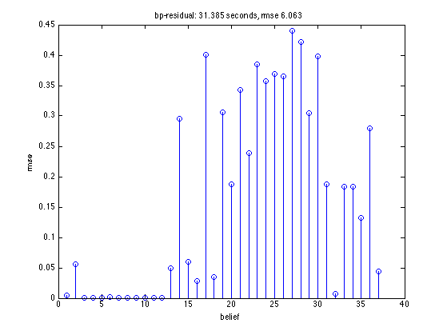

Compare speed and accuracy of belief propagation on the alarm network
Contents
%PMTKslow % This file is from pmtk3.googlecode.com function alarmBelPropDemo dgm = mkAlarmDgm(); % exact unconditional marginals nodeBels = dgmInferNodes(dgm); infEngNames = {'bp', 'bp', 'bp', 'libdaibp'}; infEngArgs = { ... {'updateProtocol', 'async'}, ... {'updateProtocol', 'sync'}, ... {'updateProtocol', 'residual'}, ... {} }; names = {'bp-asynch', 'bp-synch', 'bp-residual', 'bp-libdai'}; if ~libdaiInstalled disp('alarmBelPropDemo: libdai not installed'); infEngNames = infEngNames(1:end-1); infEngArgs = infEngArgs(1:end-1); names = names(1:end-1); end for i=1:length(infEngNames) dgm.infEngine = infEngNames{i}; dgm.infEngArgs = infEngArgs{i}; tic bels = dgmInferNodes(dgm); t = toc; figure; [errs, rmse] = compareFactors(nodeBels, bels); stem(errs); title(sprintf('%s: %5.3f seconds, rmse %5.3f', names{i}, t, rmse)); xlabel('belief'); ylabel('rmse'); end end function [err, rmse] = compareFactors(facs1, facs2)
compare two sets of factors
err(i) is the rmse between facs1{1} and facs2{2}
nfacs = numel(facs1); err = zeros(nfacs, 1); for i=1:nfacs T1 = facs1{i}.T; T2 = facs2{i}.T; err(i) = sqrt(mean((T1(:) - T2(:)).^2)); end rmse = sum(err);
end
alarmBelPropDemo: libdai not installed